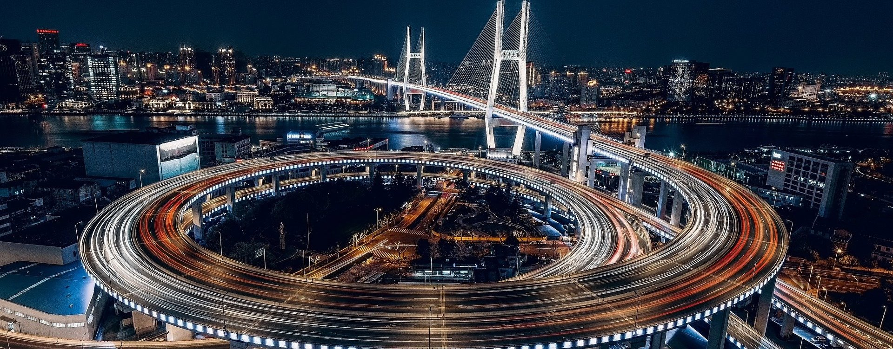
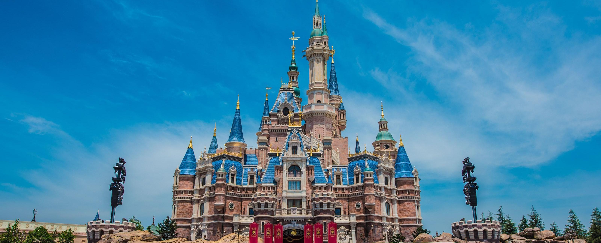
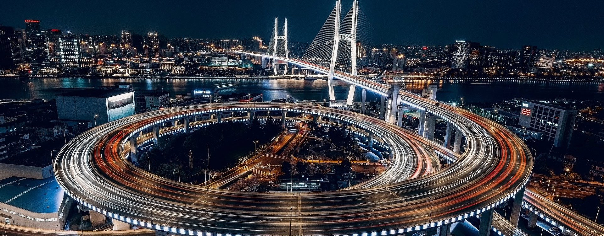
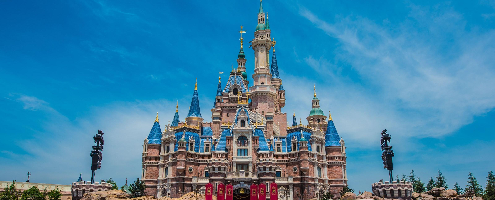

穿越中...
穿越中...
 千亿级像素全景图，鼠标旋转缩放
中国-上海
千亿级像素全景图，鼠标旋转缩放
中国-上海
 



Welcome to Shanghai，China
上海，简称“沪”或“申”，是中华人民共和国省级行政区、直辖市、国家中心城市、超大城市、上海大都市圈核心城市，国务院批复确定的中国国际经济、金融、贸易、航运、科技创新中心 。截至2019年，全市下辖16个区，总面积6340.5平方千米，建成区面积1237.85平方千米 。2020年11月1日零时，常住人口2487.09万人。
上海地处中国东部、长江入海口、东临东中国海，北、西与江苏、浙江两省相接 ，界于东经120°52′-122°12′，北纬30°40′-31°53′之间。战国时，上海是春申君的封邑，故别称申。晋朝时，因渔民创造捕鱼工具“扈”，江流入海处称“渎”，因此松江下游一带称为“扈渎”，后又改“沪”，故上海简称“沪”。
2020年，上海市地区生产总值38700.58亿元，按可比价格计算，比上年增长1.7%。 2019年12月15日，荣登中国社会科学院年度中国城市品牌前10强。
民国十五年（1926年），孙传芳督江苏省，成立淞沪商埠，分全境为上海、闸北、浦东、沪西以及吴淞5区。
民国十六年（1927年）7月7日，上海特别市成立，直辖于中央政府，上海始有直辖市一级建置。国民政府成立后，根据孙中山的大上海计划，民国十七年（1928年）国民政府设立上海特别市，扩大市区范围包括上海、宝山县的一部分，设立17个区，而上海地区各县则仍属江苏省，从此上海市与上海县分离。城市范围东达浦东，西至静安寺、徐家汇，南趋龙华，北达宝山路底。
民国十九年（1930年）7月，上海特别市改称上海市。
2020年，全市就业、社保、住房、养老、托育、教育、卫生等公共服务体系更加完善，人均期望寿命达到83.67岁、处于世界领先水平。
相亲在上海一样很流行。忙于工作，生活圈子因工作而变得狭窄，活着活着就把自己给剩下了。眼看儿女们大龄未婚，上海的父母们左联系右介绍，你可知人民广场的相亲角有多热闹！
在上海比房价更贵的是墓地。
上海人喜欢用硬币远超纸币。上海人喜欢用硬币，也随手携带硬币，基本不怎么喜欢用纸币。
方言--上海话，是一种吴语方言，属于吴语太湖片苏沪嘉小片。
上海话一般是指上海市区话，也就是被广泛使用和认同的上海主流通用方言。松江本地话是上海话的基础。上海话是上海开埠以后吴语区各地移民口音在松江话基础上自然融合而成的新型城市吴语，成为吴语区的代表和共通语言。语音受移民中占优势的宁波和苏州两地影响巨大。吴语上海话是上海文化及气质的载体，是海派文化的重要根基。上海话也和老洋房、弄堂、石库门、旗袍等一样，成为了上海风情的代表性符号。
上海人称的本帮菜指的是上海本地风味的菜肴，特色可有用浓油赤酱（油多味浓、糖重、色艳）概括。常用的烹调方法以红烧、煨、糖为主，品味咸中带甜，油而不腻。
上海派特色的滑稽戏产生于抗日战争中期，由上海的曲艺“独脚戏”接受了中外喜剧、闹剧和江南各地方戏曲的影响而逐步形成的新兴戏曲剧种。因为方言隔阂，只流行于上海、苏南、浙江等吴语地区。一人演出的滑稽曲艺称作“独脚戏”。
沪剧（旧时也称申曲）是用上海话演唱的上海本地戏曲。上海说唱、浦东说书等也是上海特色曲艺。
苏州评弹、越剧等江苏南部、浙江北部的曲艺，因其与上海语言文化相近，在沪上拥有许多观众。